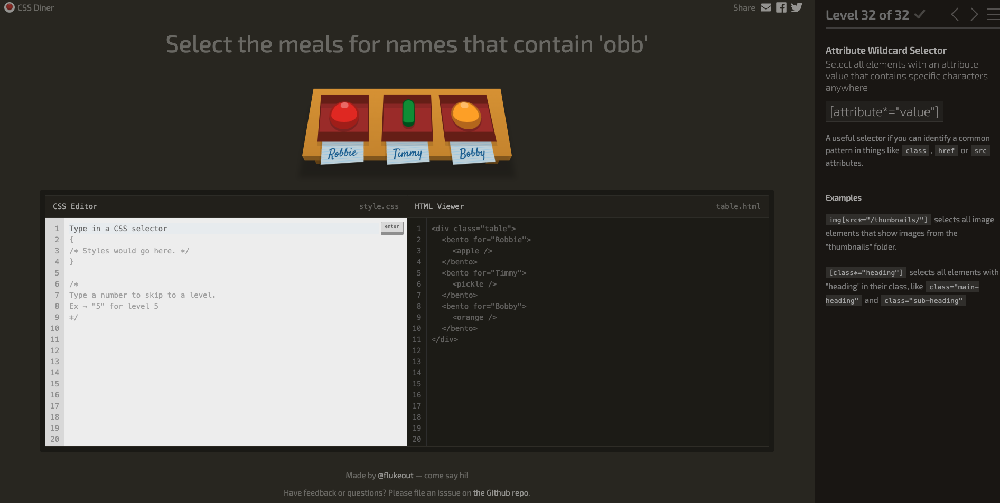

HTML no es un lenguaje de programacion sino un lenguaje de marcadoque se usa para crear páginas web basicas, solamente organiza textos, imagenes, botones, enlaces
En head es informacion que las personas no vemos en la pagina pero es importante porque ahi se pone el nombre de la pagina, se configura el archivo que tiene los colores y estilos de la pagina y mas configuracion que un programador usa. Y body se usa para poner el contenido que las personas si vemos en la pagina, como textos, imagenes, botones, enlaces, etc.
El tag section se usa para definir una sección en la pagina. El tag article se usa para definir un artículo en la pagina. El tag aside se usa para definir contenido secundario en la pagina. El tag header se usa para definir el encabezado de la pagina. El tag footer se usa para definir el pie de pagina de la pagina.
Unordered list:
Ordered list:
| Nombre | Edad |
|---|---|
| Alvaro | 20 |
| Max | 22 |
CSS es un lenguaje de estilo que se usa dentro de una página web y permite ajustar el diseño, colores, fuentes, espaciado y otras características de los elementos HTML.
El propósito de CSS es mejorar la apariencia visual de una página web y hacerla más atractiva y fácil de usar para los visitantes.
How do you apply a CSS to an HTML (explain the 3 options)
1. Inline CSS: Se aplica directamente a un elemento HTML usando el atributo "style".
2. Internal CSS: Se define dentro de la etiqueta "style" en la sección "head" del documento HTML.
3. External CSS: Se define en un archivo separado con extensión ".css" y se vincula al documento HTML usando la etiqueta "link".
Un selector es la parte de una regla CSS que especifica a qué elementos HTML se aplicará la regla. Por ejemplo, en la regla "p { color: red; }", el selector es "p", que selecciona todos los elementos de párrafo en el documento.
Una regla CSS es una declaración que define cómo se deben mostrar los elementos seleccionados.

Tag Selector: Sirve para aplicar un estilo a todos los elementos iguales, por ejemplo todos los párrafos o todos los títulos.
Class Selector: Sirve para aplicar un estilo a varios elementos que tengan el mismo nombre de clase, aunque sean diferentes tipos.
Tag and Class Selector: Sirve para aplicar estilo solo a un tipo específico de elemento que además tenga cierta clase.
Id Selector: Sirve para aplicar estilo a un solo elemento único en toda la página.
Una clase es como una etiqueta que puedes repetir en varios elementos HTML para aplicar estilos CSS. Se define usando "class" en el elemento HTML y se selecciona en CSS usando un punto (.) seguido del nombre de la clase.
Un id es como un nombre unico que se asigna a un solo elemento HTML para identificarlo de manera única. Se define usando el atributo "id" en el elemento HTML y se selecciona en CSS usando un símbolo de gato (#) seguido del nombre del id.
Describe cómo se representan los elementos HTML en la página. Cada elemento se representa como una caja rectangular que Tiene 4 partes: contenido (lo que ves), padding (espacio interno), border (el borde), margin (espacio externo).
Las media queries permiten aplicar estilos específicos a diferentes dispositivos o tamaños de pantalla. Se utilizan para crear diseños responsivos que se adaptan a diferentes resoluciones y orientaciones de pantalla.
El display: grid nos ayuda a crear diseños de cuadrícula bidimensionales. Con grid, puedes definir filas y columnas para organizar el contenido de manera flexible y controlada.